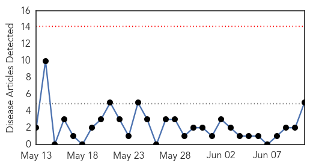
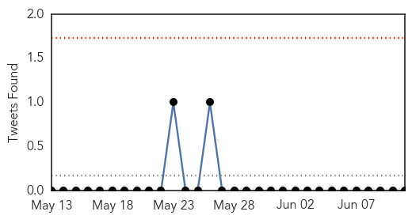
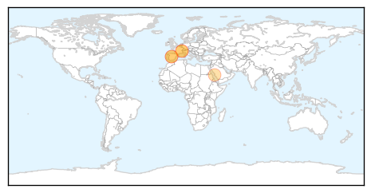
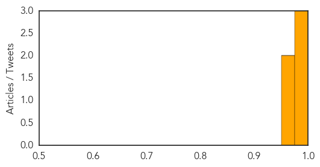

Meningitis
30-Day Web Trend
0 alerts, 0 warnings
30-Day Twitter Trend
0 alerts, 0 warnings

Article Locations

Article Confidences

Top Articles:
-
No articles found for Jun 11, 2014
Top Tweets:
-
No tweets found for Jun 11, 2014
Influenza
30-Day Web Trend
0 alerts, 0 warnings

30-Day Twitter Trend
0 alerts, 0 warnings

Article Locations
Article Confidences
Top Articles:
Top Tweets:
- 0.672
- WTF of the week/year: Circulating Avian Influenza Viruses Closely Related to the 1918 Virus Have Pandemic Potential http://t.co/jdeb1seiMJ